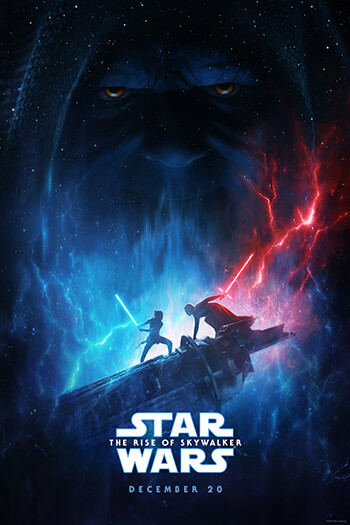

The Rise of Skywalker
In *The Rise of Skywalker*, the final chapter in the Skywalker saga, Rey, Finn, and Poe Dameron join forces with the Resistance to face off against the First Order once more. Palpatine, the resurrected Sith Emperor, unveils his plan to reclaim control of the galaxy, with Kylo Ren by his side. Rey continues her Jedi training and learns about her mysterious past, grappling with the legacy of the Skywalker family and her own powers. With the help of allies old and new, Rey leads a final battle against Palpatine, ending his reign and bringing peace to the galaxy. The saga concludes with hope as Rey adopts the Skywalker name and a new era begins.


Characters
| Cast Actor | Character |
|---|---|
| Daisy Ridley | Rey |
| Adam Driver | Kylo Ren |
| John Boyega | Finn |
| Oscar Isaac | Poe Dameron |
| Carrie Fisher | Leia Organa |
| Ian McDiarmid | Emperor Palpatine |
| Anthony Daniels | C-3PO |